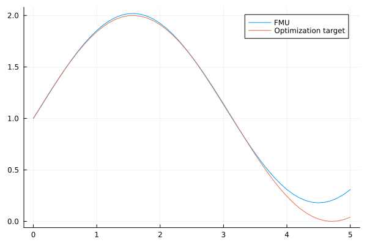

FMU Parameter Optimization
Tutorial by Tobias Thummerer
License
# Copyright (c) 2021 Tobias Thummerer, Lars Mikelsons
# Licensed under the MIT license.
# See LICENSE (https://github.com/thummeto/FMI.jl/blob/main/LICENSE) file in the project root for details.Introduction to the example
This example shows how a parameter optimization can be set up for a FMU. The goal is to fit FMU parameters (and initial states), so that a reference trajectory is fit as good as possible.
Note, that this tutorial covers optimization without gradient information. Basically, FMI.jl supports gradient based optimization, too.
Other formats
Besides, this Jupyter Notebook there is also a Julia file with the same name, which contains only the code cells and for the documentation there is a Markdown file corresponding to the notebook.
Getting started
Installation prerequisites
| Description | Command | |
|---|---|---|
| 1. | Enter Package Manager via | ] |
| 2. | Install FMI via | add FMI |
| 3. | Install FMIZoo via | add FMIZoo |
| 4. | Install Optim via | add Optim |
| 5. | Install Plots via | add Plots |
Code section
To run the example, the previously installed packages must be included.
# imports
using FMI
using FMIZoo
using Optim
using PlotsSimulation setup
Next, the start time and end time of the simulation are set.
tStart = 0.0
tStop = 5.0
tStep = 0.1
tSave = tStart:tStep:tStop0.0:0.1:5.0Import FMU
In the next lines of code the FMU model from FMIZoo.jl is loaded and the information about the FMU is shown.
# we use an FMU from the FMIZoo.jl
fmu = fmiLoad("SpringPendulum1D", "Dymola", "2022x"; type=:ME)
fmiInfo(fmu)#################### Begin information for FMU ####################
Model name: SpringPendulum1D
FMI-Version: 2.0
GUID: {fc15d8c4-758b-48e6-b00e-5bf47b8b14e5}
Generation tool: Dymola Version 2022x (64-bit), 2021-10-08
Generation time: 2022-05-19T06:54:23Z
Var. naming conv.: structured
Event indicators: 0
Inputs: 0
Outputs: 0
States: 2
33554432 ["mass.s"]
33554433 ["mass.v"]
Supports Co-Simulation: true
Model identifier: SpringPendulum1D
Get/Set State: true
Serialize State: true
Dir. Derivatives: true
Var. com. steps: true
Input interpol.: true
Max order out. der.: 1
Supports Model-Exchange: true
Model identifier: SpringPendulum1D
Get/Set State: true
Serialize State: true
Dir. Derivatives: true
##################### End information for FMU #####################Now, the optimization objective (the function to minimize) needs to be defined. In this case, we just want to do a simulation and compare it to a regular sin wave.
s_tar = 1.0 .+ sin.(tSave)
# a function to simulate the FMU for given parameters
function simulateFMU(p)
s0, v0, c, m = p # unpack parameters: s0 (start position), v0 (start velocity), c (spring constant) and m (pendulum mass)
# pack the parameters into a dictionary
paramDict = Dict{String, Any}()
paramDict["spring.c"] = c
paramDict["mass.m"] = m
# pack the start state
x0 = [s0, v0]
# simulate with given start stae and parameters
sol = fmiSimulate(fmu, (tStart, tStop); x0=x0, parameters=paramDict, saveat=tSave)
# get state with index 1 (the position) from the solution
s_res = fmiGetSolutionState(sol, 1; isIndex=true)
return s_res
end
# the optimization objective
function objective(p)
s_res = simulateFMU(p)
# return the position error sum between FMU simulation (s_res) and target (s_tar)
return sum(abs.(s_tar .- s_res))
endobjective (generic function with 1 method)Now let's see how far we are away for our guess parameters:
s0 = 0.0
v0 = 0.0
c = 1.0
m = 1.0
p = [s0, v0, c, m]
obj_before = objective(p) # not really good![34mSimulating ME-FMU ... 100%|██████████████████████████████| Time: 0:00:08[39m
54.43219974960283Let's have a look on the differences:
s_fmu = simulateFMU(p); # simulate the position
plot(tSave, s_fmu; label="FMU")
plot!(tSave, s_tar; label="Optimization target")Not that good. So let's do a bit of optimization!
opt = Optim.optimize(objective, p; iterations=250) # do max. 250 iterations
obj_after = opt.minimum # much better!
p_res = opt.minimizer # the optimized parameters4-element Vector{Float64}:
1.000000090936486
0.9779757996615742
0.130860011492463
0.11402874395172038Looks promising, let's have a look on the results plot:
s_fmu = simulateFMU(p_res); # simulate the position
plot(tSave, s_fmu; label="FMU")
plot!(tSave, s_tar; label="Optimization target")
Actually a pretty fit! If you have higher requirements, check out the Optim.jl library.
Summary
This tutorial showed how a parameter (and start value) optimization can be performed on a FMU with a gradient free optimizer. This tutorial will be extended soon to further show how convergence for large parameter spaces can be improoved!